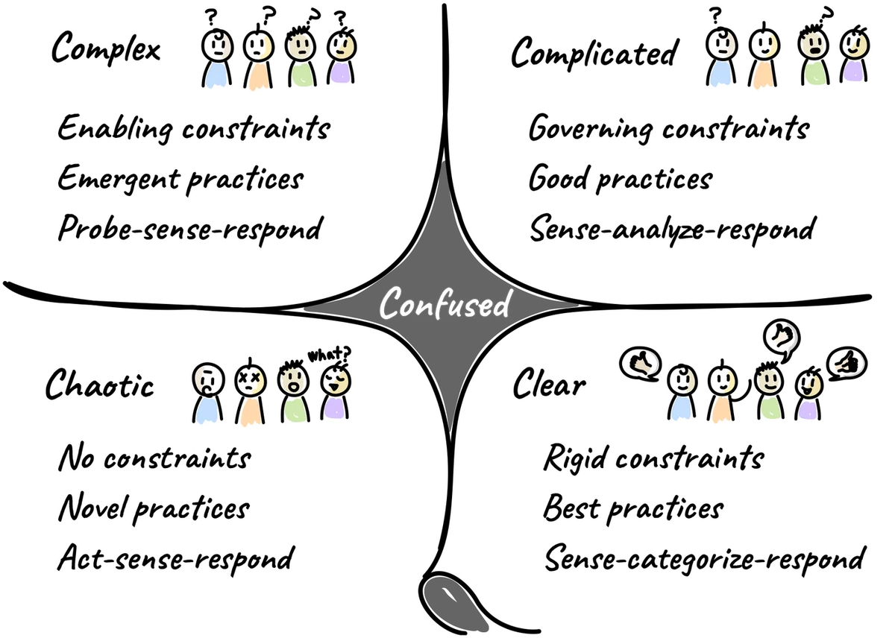

What this resource is for
Not all decisions should be made the same way. A decision about which database engine to use is structurally different from a decision about how to enter a new market, which is structurally different from a decision about how to respond to an unexpected production incident. Applying the wrong decision process to a given situation creates real costs — either excessive slowness (running a consensus process on something that should be delegated) or dangerous confidence (applying a best-practice checklist to a situation that is fundamentally novel). The Cynefin framework is a sensemaking model that helps you match your decision process to the nature of the situation you are in.
The core idea: context determines method
Cynefin (pronounced kuh-NEV-in, a Welsh word meaning "habitat" or "place of belonging") was developed by Dave Snowden, a Welsh management consultant and researcher. Its central claim is that situations differ in how cause and effect relate to each other, and that this difference should determine how you approach them.
The framework divides situations into five domains, each with its own characteristics and corresponding approach for addressing problems.
The five domains

Clear is the domain where the relationship between cause and effect is clear and obvious. There is an established best practice, and solutions are most reliably achieved by following standard operating procedures. This is the domain of known-knowns — what needs to be done is understood by anyone with appropriate training. The decision process is: sense what is happening, categorise it against known patterns, and respond with the established approach. Most routine operational decisions live here. The risk is complacency — over-categorising complex situations as clear because a familiar-looking pattern is present, or failing to notice when a previously stable situation has shifted.
Complicated is the domain where the relationship between cause and effect is not immediately clear, and expertise is required to analyse and solve the problem. Solutions may require the involvement of subject matter experts, analytical tools, or established best practices — but the right answer can be found through analysis. This is the domain of known-unknowns: we know we don't know, and we know how to find out. The decision process is: sense what is happening, analyse it (usually with expert input), and respond with a considered approach. Engineering decisions, architectural trade-offs, and financial modelling typically live here. The risk is over-reliance on experts and the tendency to treat expertise as unquestionable.
Complex is the domain where the relationship between cause and effect can only be understood in hindsight. The system is adaptive — it responds to interventions in ways that cannot be fully predicted in advance. This is the domain of unknown-unknowns: we don't know what we don't know, and analysis will not reveal the answer before we act. The decision process is different here: instead of analysing before acting, you run safe-to-fail experiments, observe the results, and amplify what works while dampening what does not. Product development, organisational change, and most strategic decisions in uncertain markets live here. The risk is trying to impose complicated-domain analysis on a complex situation — treating a living system like a machine.
Chaotic is the domain where there is no discernible relationship between cause and effect, and the situation is rapidly changing. This is the domain of unknowables. Rapid decision-making and immediate action are necessary to bring stability to the situation — not analysis, not consultation. The decision process is: act first to reduce the chaos, sense what effects your actions are having, and respond by moving toward more stable ground. The risk is remaining in action mode after the crisis has stabilised, which prevents the reflection and learning that the situation requires.
Confused is the domain in which it is unclear which of the other four domains applies. It is a state of confusion or uncertainty about the nature of the situation itself. The practical risk in confusion is that different people apply different frameworks simultaneously without realising it, leading to fragmented and contradictory responses. The goal when confused is to gather enough information to shift into one of the other four domains — to diagnose before deciding.
Why this matters for decision protocol design
The most common failure mode in organisational decision-making is domain confusion. Teams apply best-practice thinking — the Clear domain approach — to situations that are actually Complex, because it feels more comfortable to follow a known process than to run experiments in uncertainty.
Alternatively, teams that have learned to be adaptive in product development sometimes resist any process or structure, even when they are dealing with Complicated or Clear situations where structure would serve them well.
A second common failure is expert overconfidence in Complicated domain situations. Having the right expert in the room is necessary but not sufficient — experts can be wrong, best practices can be outdated, and the analysis can miss important contextual factors. Good Complicated-domain decision-making includes challenge mechanisms and review alongside expert input.
A third failure is the tendency to skip the Chaotic domain's act-first imperative. In a genuine crisis, attempting to run a structured analysis process before acting is itself a decision — usually the wrong one. Cynefin is explicit that speed of action takes priority over quality of analysis when the situation is genuinely chaotic.
For decision protocol design, Cynefin gives you a diagnostic question to ask before choosing a process: what domain is this decision in? The answer determines whether you should be delegating to a trained operator, calling in an expert, running an experiment, or simply acting and observing.
Practical applications
In a planning context, Cynefin helps teams avoid two opposite failure modes. Over-planning — writing detailed specifications for work that is actually in the Complex domain — generates waste because the system will not behave as predicted. Under-planning — treating genuinely Complicated technical problems as if they require experimentation rather than analysis — leads to avoidable rework that good upfront thinking would have prevented.
In a meeting context, Cynefin helps facilitators recognise when a discussion is stuck because the group is applying the wrong mode of reasoning to the problem at hand. A group trying to analyse its way to a solution in a Complex domain situation will loop endlessly, because the analysis will not converge. The facilitator's intervention is to name the domain and propose a different approach — an experiment, a probe, a safe-to-fail pilot — rather than more analysis.
In an escalation context, Cynefin helps clarify what you are actually asking when you escalate a decision. If the situation is Clear, escalation is probably waste — the answer is already known and someone closer to the work should apply it. If the situation is Complex, escalating to a senior decision-maker may actually reduce decision quality, because the senior person has less proximity to the signals that matter.
A note on boundaries
The boundaries between domains in Cynefin are not fixed. Situations move. A situation that starts as Chaotic (an unexpected production outage) may stabilise into Complex (a systemic reliability problem requiring experimentation) and eventually into Complicated (a known class of failure with a recommended response). Tracking where a situation is in this arc, and adjusting your decision approach accordingly, is one of the most valuable skills that Cynefin develops.
Snowden also warns specifically about the boundary between Clear and Chaotic — a boundary that can be crossed suddenly and without warning when an apparently stable situation collapses. Organisations that have been operating successfully in Clear-domain mode for a long time can be blindsided by conditions that invalidate their established practices overnight.
Further reading
- Snowden, D. & Boone, M. — "A Leader's Framework for Decision Making" (Harvard Business Review, November 2007) — the most accessible introduction to Cynefin
- Snowden, D. — various writings at cognitive-edge.com for deeper and more current treatment of the framework